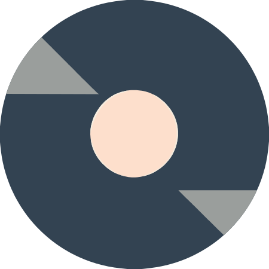

 Suloware
📜 Manifesto
SuloWare is a comprehensive IT solutions provider, dedicated to empowering businesses with innovative technology. Our diverse range of services caters to a wide spectrum of industries, including hospitality, retail, and automotive. We specialize in:
Website Development:
Crafting visually appealing and user-friendly websites that effectively showcase your brand and drive online growth.
iT Consulting:
Providing expert advice and strategic guidance to optimize your IT infrastructure, enhance security, and boost productivity.
Automotive Software:
Developing cutting-edge software solutions to streamline automotive operations, from inventory management to customer service.Hotel Management Systems: Implementing robust hotel management systems to streamline operations, improve guest experience, and maximize revenue.
Point of Sale (POS) Systems:
Offering efficient POS solutions to optimize sales processes, track inventory, and generate valuable business insights.
Software Development and ERP Solutions:
Tailoring software solutions and Enterprise Resource Planning systems to meet specific business needs, improving efficiency and decision-making. With a commitment to excellence and customer satisfaction, SuloWare delivers innovative IT solutions that drive business success.تطوير مواقع الويب: صياغة مواقع ويب جذابة بصريًا وسهلة الاستخدام تعرض علامتك التجارية بشكل فعال وتعزز النمو عبر الإنترنت.
الاستشارات التقنية: تقديم المشورة والارشاد الاستراتيجي لتحسين البنية التحتية لتكنولوجيا المعلومات، وتعزيز الأمن، وزيادة الإنتاجية.برمجيات السيارات: تطوير حلول برمجية متطورة لترشيد العمليات السيارات، من إدارة المخزون إلى خدمة العملاء.
 نظم إدارة الفنادق: تنفيذ أنظمة إدارة فنادق قوية لترشيد العمليات، وتحسين تجربة الضيوف، وتعظيم الإيرادات.
نظم إدارة الفنادق: تنفيذ أنظمة إدارة فنادق قوية لترشيد العمليات، وتحسين تجربة الضيوف، وتعظيم الإيرادات.تقديم حلول نقاط البيع: الفعالة لتحسين عمليات البيع وتتبع المخزون وتوليد رؤى تجارية قيمة. نظم نقاط البيع (POS)
تصميم حلول برمجية وأنظمة تخطيط موارد المؤسسة: لتلبية الاحتياجات التجارية المحددة، وتحسين الكفاءة واتخاذ القرارات طوير البرمجيات وحلول تخطيط موارد المؤسسة (ERP): مع التزامنا بالتميز ورضا العملاء، توفر سولوير حلول تكنولوجيا المعلومات المبتكرة التي تدفع النجاح التجاري.
Suloware is your ultimate partner in leveraging the power of Artificial Intelligence to revolutionize your business productivity. Our cutting-edge AI services are designed to streamline operations, enhance decision-making, and unlock new levels of efficiency for your company. Whether you're looking to automate repetitive tasks, gain actionable insights from big data, or improve customer experiences, Suloware provides tailor-made solutions to meet your specific needs. With a team of AI experts and a deep understanding of modern business challenges, we offer services like predictive analytics, natural language processing, intelligent automation, and customized AI tools. Our mission is to empower businesses to stay ahead in a competitive market by integrating innovative technology into their workflows seamlessly. At Suloware, we don’t just provide AI solutions; we deliver measurable results that drive growth and success for your organization.
سولوير هي شريكك المثالي لاستغلال قوة الذكاء الاصطناعي لإحداث ثورة في إنتاجية أعمالك. نحن نقدم خدمات ذكاء اصطناعي متطورة مصممة لتبسيط العمليات، وتعزيز اتخاذ القرارات، وفتح آفاق جديدة من الكفاءة لشركتك. سواء كنت تسعى لأتمتة المهام المتكررة، أو استخراج رؤى قابلة للتنفيذ من البيانات الضخمة، أو تحسين تجارب العملاء، فإن سولوير تقدم حلولًا مصممة خصيصًا لتلبية احتياجاتك. بفضل فريق من خبراء الذكاء الاصطناعي وفهم عميق لتحديات الأعمال الحديثة، نقدم خدمات مثل التحليلات التنبؤية، ومعالجة اللغة الطبيعية، والأتمتة الذكية، وأدوات الذكاء الاصطناعي المخصصة. رسالتنا هي تمكين الشركات من التقدم في سوق تنافسية من خلال دمج التكنولوجيا المبتكرة في سير العمل بسلاسة. في سولوير، لا نقدم حلول ذكاء اصطناعي فحسب، بل نقدم نتائج قابلة للقياس تدفع نمو ونجاح مؤسستك.
💻 Projects
Photo Hash Fultter, Dart
Application using Flutter and Dart that generates ASCII art representations of images User uploads an image
or selects one from the device. The application processes the image and converts it into ASCII art format.
Users can customize the level of detail ,colors and style in the generated art that work on android ,Linux and
web.
G Hash go-lang
Conceptualized and developed a NFT project using Golang that generates unique, code-driven ASCII art
GIFs. This project merges the artistic realm of ASCII art with the innovative world of NFTs. I leveraged
Golang's powerful capabilities for generating dynamic ASCII art to create a collection of programmatically
produced, animated NFTs.
Twitter-bot python
Developed and deployed a Twitter bot using Python, Tweepy this bot leverages my skills in automation and
social media to increase brand awareness, provide valuable content to followers, foster community engagement
Portfolio page HTML, CSS, JavaScript
Leveraging the power of HTML, CSS, and JavaScript, I've crafted a dynamic 3D portfolio website that
showcases my professional journey. This interactive experience presents my skills, experience, and projects in
a visually engaging format, making a lasting impression on potential employers.
The best way out is always through
-Robert Frost
📎 Contact Us
suloware@gmail.com
+96897272069
location: Muscat, seeb